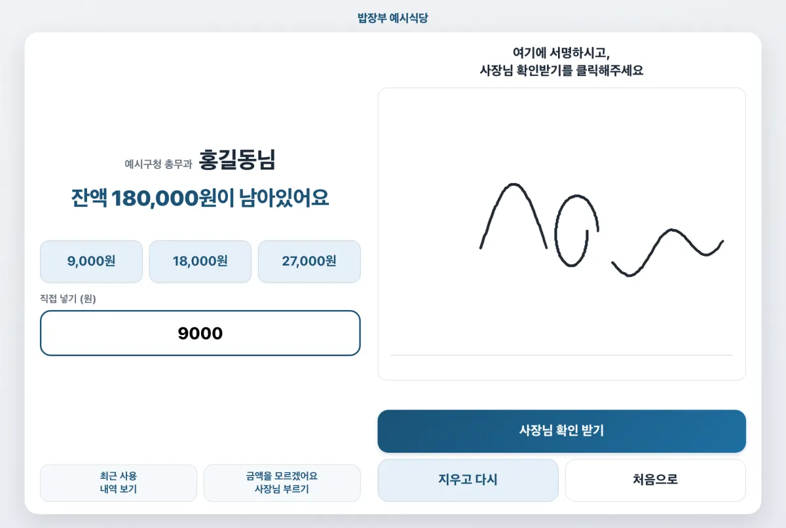
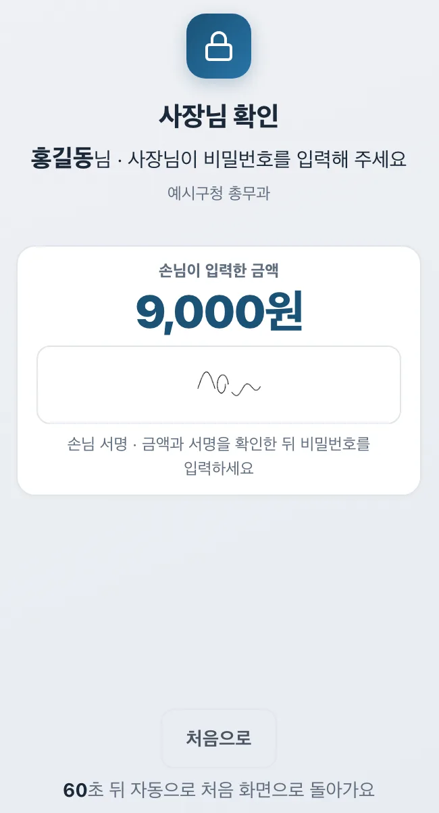
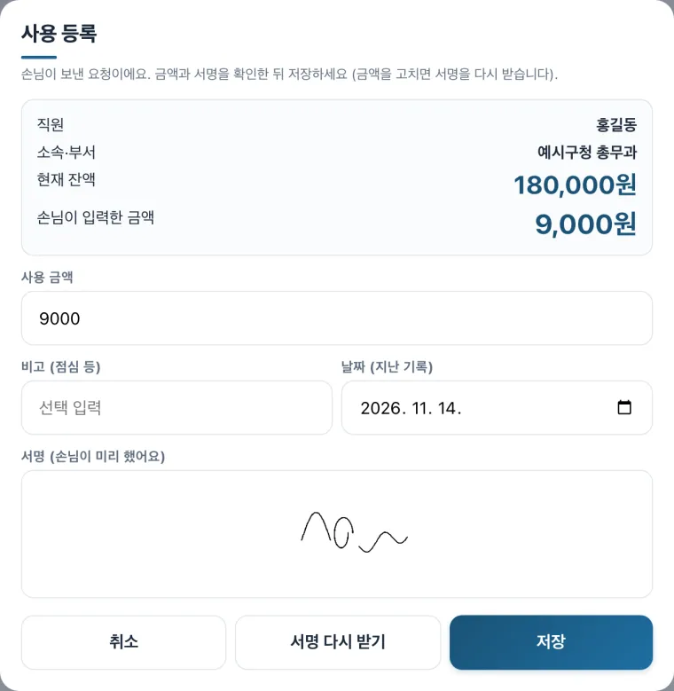

우리 가게 식대 장부,
폰·태블릿으로.
공공기관이나 회사가 미리 낸 직원 식대(선금)를 종이 장부 대신 가게 태블릿에 적어요.
무료이고, 가입 없이 바로 써요. 결제앱이 아닙니다. 돈은 앱을 거치지 않아요.
음식점 사장님
음식점 앱 열기
가게 태블릿에 장부를 써요. 처음 열면 홈 화면에 추가해 주세요.공공기관 담당자(서무)
담당자 웹 열기
직원 명단과 금액을 음식점에 보내요.직원
직원용 기록장 열기
내 폰에 따로 적어 두는 기록장이에요(베타).
세 곳 모두 새 탭으로 열려요.

가게에서는 이렇게 써요
바쁠 때는 손님이 직접 적고, 사장님은 마지막 확인만 해요. 손님이 적기만 해서는 장부에 남지 않아요.
손님이 이름을 찾아요
계산대 태블릿에서 이름을 앞글자부터 쳐요. 초성(예: ㅎㄱㄷ)도 돼요. 맞으면 [네, 맞아요]를 눌러요.
금액을 넣고 서명해요
남은 잔액이 크게 보여요. 먹은 금액을 넣고 손가락으로 서명한 뒤 [사장님 확인 받기]를 눌러요. 잔액보다 많이는 못 넣어요.
사장님이 비밀번호를 넣어요
손님이 넣은 금액과 서명이 화면에 보여요. 60초 동안 아무도 누르지 않으면 요청은 지워지고 처음 화면으로 돌아가요.
보고 [저장]을 눌러요
그때 장부에 남고 잔액이 줄어요. 금액을 고치면 서명을 다시 받아요.


공공기관 명단은 이렇게 들어와요
공공기관 담당자(서무)가 직원 이름과 금액을 보내면, 암호화된 명단이 그 음식점 앱으로만 와요. 돈은 앱 밖에서 따로 받고, 사장님이 입금을 확인한 뒤 명단을 받아요.
장부는 가게 태블릿 안에 있어요
그래서 따로 보관해 두어야 해요. 설정의 [장부 지키기]에서 [지금 백업하기]를 누르면, 암호를 건 백업 파일을 카톡·메일로 보내거나 기기에 저장할 수 있어요. 기기에 저장한 파일은 폰이나 USB로 옮겨 두세요.
사용 안내서
역할마다 따로 있어요. 2~3쪽짜리라 인쇄해 두고 봐도 돼요.
- 음식점 사장님 안내서가게 장부 쓰기
- 공공기관 담당자(서무) 안내서명단 보내기
- 직원 안내서식사 기록하기
- 태블릿 옆에 두는 손님 안내문A4 한 장
자주 묻는 질문
이 앱으로 돈이 오가나요?
아니요. 받은 선금과 식사 내역을 기록하는 장부예요. 운영자는 돈을 받거나 보관하지 않아요.
손님도 앱을 설치해야 하나요?
아니요. 가게 태블릿이나 스마트폰에서 입력하면 돼요. 직원용 앱은 내 폰에 따로 적어 두고 싶을 때만 써요. 가게 장부와 자동으로 연결되지 않아요.
폰을 바꾸거나 앱을 지워도 되나요?
먼저 설정의 [장부 지키기]에서 [지금 백업하기]로 백업해 주세요. 암호를 건 백업 파일에는 가게 열쇠도 함께 들어가요. 앱을 지워도 서버의 가게 등록은 남아요. 등록 해제와 기기 변경 순서는 사장님 안내서를 확인해 주세요.